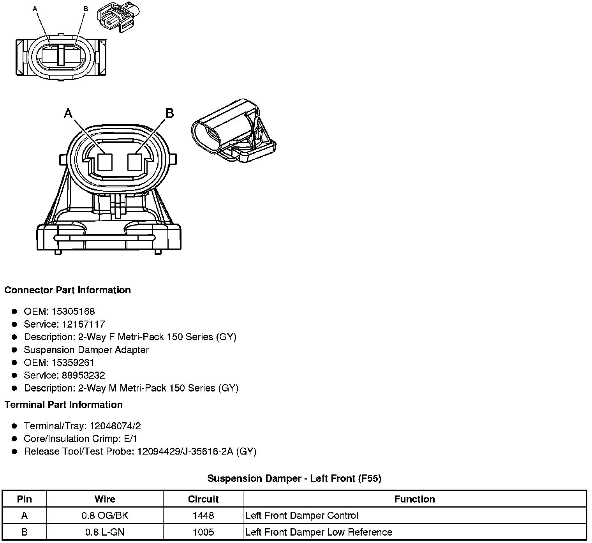
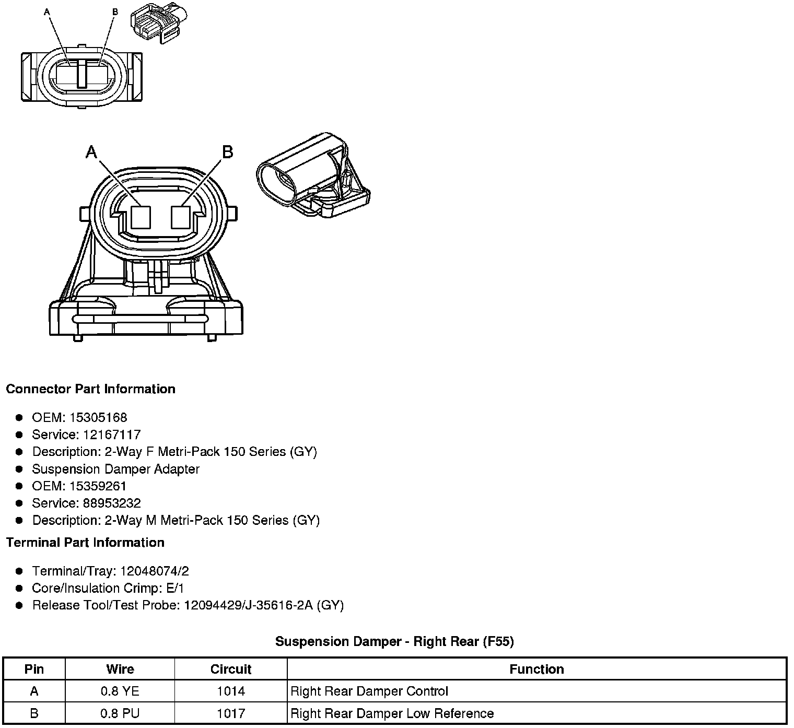

Operation CHARM
: Car repair manuals for everyone.
Home
>>
Cadillac
>>
2008
>>
SRX AWD V8-4.6L
>>
Repair and Diagnosis
>>
Steering and Suspension
>>
Suspension
>>
Suspension Control ( Automatic - Electronic )
>>
Damping Control Actuator
>>
Diagrams
Damping Control Actuator: Diagrams
Component Connector End Views
Suspension
Damper - Left Front (F55)

Suspension
Damper - Left Rear (F55)
Suspension
Damper - Right Front (F55)
Suspension
Damper - Right Rear (F55)
